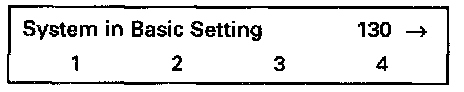

Oxygen Sensor (O2S) Aging
Special tools, testers and auxiliary items:- VAG 1551/1552 scan tool with VAG 1551/3 adapter cable.
Test conditions:
- Coolant temperature at least 80°C (176°F).
Functional check:
- Engine running at idle.
- Connect VAG 1551/1552 scan tool and select "Engine Electronics" address word 01. Testing and Inspection
Indicated on display
- Press buttons -0-and -4- to select "Basic Setting" function 04 and press -Q- button to confirm input.
Indicated on display
- Press buttons -1-, -3- and -0- to input display group 130 and press -Q- button to confirm input.

Indicated on display (1-4 = display fields)
- Increase engine speed to 2200-2800 RPM and check the specifications for HO2S aging before three way catalytic converter (display field 1-4).
NOTE:
So that the exhaust gas temperature is within specification range during the test, the test RPM must be held for at least 1 minute. Observe the O2S control status in display field 4.

- Press -C- button.
- Press buttons -1-, -3- and -1- to input display group 131 and press -Q- button to confirm input.

Indicated on display (1-4 = Display fields)
- Run engine at idle speed and check specifications.

Continuation:
If specification is not attained:
- Perform a road test to clear HO2S of possible residue and repeat the test.
If the specification is again not attained:
- Replace HO2S -G39- (before three way catalytic converter).
- Read the readiness code. If DTC memory has been erased, verify repair via appropriate display group See Readiness code, creating. Testing and Inspection
Relevance of values in 8-digit number block